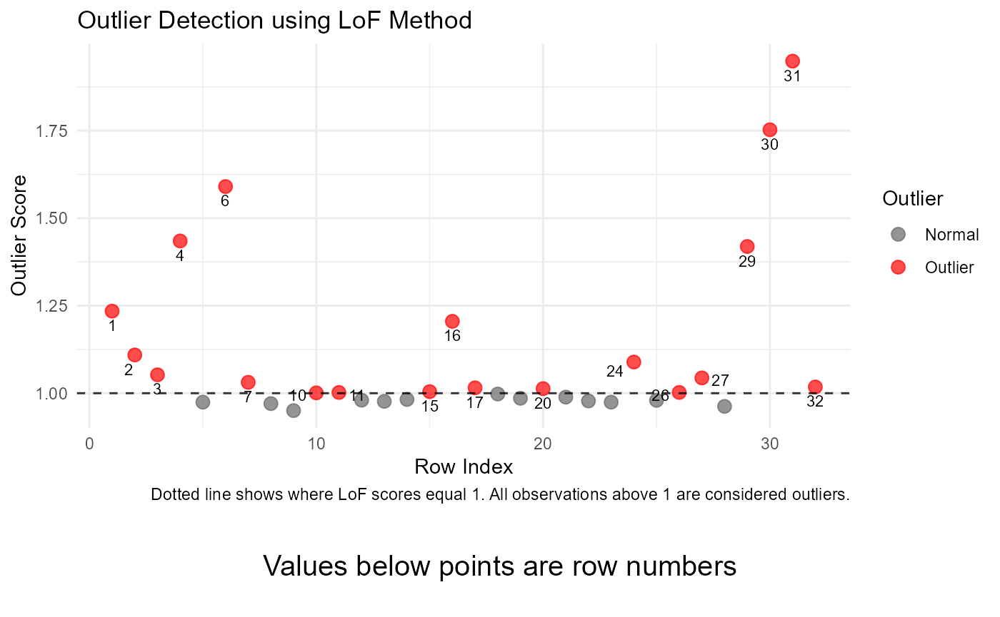
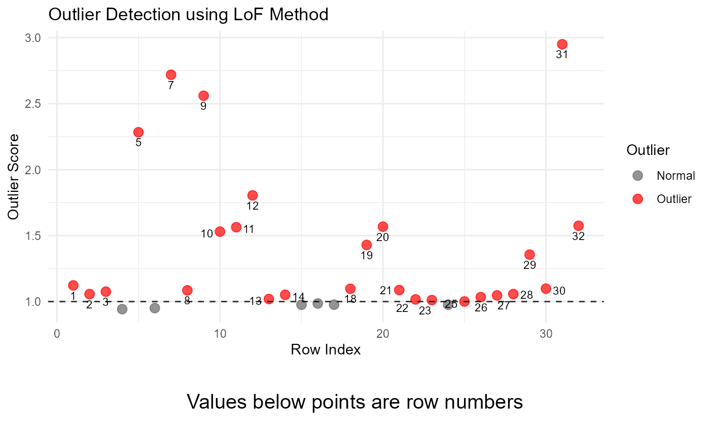

What are multivariate outliers? How do you detect them?
A multivariate outlier is an outlier that can only be detected by looking at two variables in combination. The graph below shows examples of multivariate outliers. The data for this graph is taken from the Salaries dataset from the carData package.

All of the red dots are multivariate outliers. The point labelled 1
on the graph is a clear example of a multivariate outlier. This person
has their PhD for 22 years, a normal value for that variable, and makes
$62,884, which is also a normal value for salary. However,
when combining these two features, a person who has had 22 years since
their PhD and makes only $62,884 is making much less than
other professors within their experience range.
The outliers in this graph were detected using the LoF method, and more detail about that method can be provided below. This package specifically focuses on four different methods for finding multivariate outliers: kNN, LoF, mahalanobis distance, and iForest.
kNN
kNN calculates the distances between a data point and its k-nearest neighbors and assigns an outlier score based on that distance. The principle that guides kNN is that outliers lay far away from their neighbours, so each of the distances is interpreted within that context. Because some variables in the data may have much larger ranges that others (ex. a variable has a range from 1-10 and another has a range of -10000 to 10000), the data is standardized before calculating the distances.
Here is an example of the distances for the first 5 rows in mtcarsOutliers, a dataset included with this package.
#> [,1] [,2] [,3] [,4] [,5]
#> [1,] 1.5229770 2.102410 2.265502 2.651939 2.664224
#> [2,] 1.5031299 1.509144 1.522977 1.568453 1.608401
#> [3,] 1.2561178 1.503130 1.728826 1.817606 1.983652
#> [4,] 0.3490918 1.045627 1.163944 1.331333 1.351668
#> [5,] 4.7397611 5.019562 5.024754 5.026238 5.106755After each of these distances are calculated, the average for each row is calculated. Here are the average scores for the 5 rows shown above. This step is why it’s important to standardize the data before finding the distances.
#> [1] 2.241410 1.542421 1.657866 1.048333 4.983414In this function, the next step involves creating a threshold for declaring a point an outlier. To calculate this threshold, the function takes the average of each row (after that row’s average has been calculated), and adds 2 times the standard deviation of each row to that number. In this case, the threshold is the number below.
#> [1] 5.657686Outliers are considered any points with a score above the calculated threshold. In this case, the outliers are shown below.
#>
#> Method: kNN
#> Dataset: mtcarsOutliers
#> Variables: mpg cyl disp hp drat wt qsec vs am gear carb scores
#> Row: 11 19
#> Outlier Score: 547.8248 393.1049
#> Message: Outliers detected
#> Option 1 : k = 5
#>
#> Five Highest Outliers of Data Used:
#> mpg cyl disp hp drat wt
#> Merc 280C 17.80000 6.000000 -459.2495 123.0000 3.920000 3.440
#> Honda Civic 30.40000 4.000000 783.2571 52.0000 4.930000 1.615
#> Merc 280 44.30673 6.000000 167.6000 -238.7728 4.560312 3.440
#> Hornet Sportabout 18.70000 -4.137792 360.0000 446.9140 3.150000 3.440
#> Maserati Bora 15.00000 8.000000 301.0000 335.0000 3.540000 3.570
#> qsec vs am gear carb scores
#> Merc 280C 18.90000 1 0 4.0000000 4 547.8248
#> Honda Civic 18.52000 1 1 4.0000000 2 393.1049
#> Merc 280 18.30000 1 0 4.0000000 4 318.1242
#> Hornet Sportabout 17.02000 0 0 3.0000000 2 189.8207
#> Maserati Bora 33.90273 0 1 0.9829575 8 117.9942Customizing the k parameter
The value k tells the function how many points to
consider as neighbors when identifying distances between each of the
points. The default value, 5, finds the distance between each point the
5 points that are closest to that point. The choice of k
significantly impacts the results, and smaller values are generally more
sensitive to outliers. You can supply your own value of k,
which may change the results of the function.
multiOutliers(mtcarsOutliers, method = "kNN", k = 10)
#>
#> ── Summary Information ─────────────────────────────────────────────────────────
#>
#> Method: kNN
#> Dataset: mtcarsOutliers
#> Variables: mpg cyl disp hp drat wt qsec vs am gear carb scores
#> Row: 11 19
#> Outlier Score: 568.7642 441.0597
#> Message: Outliers detected
#> Option 1 : k = 10
#>
#> ── Dataset Information ─────────────────────────────────────────────────────────
#>
#> Five Highest Outliers of Data Used:
#> mpg cyl disp hp drat wt
#> Merc 280C 17.80000 6.000000 -459.2495 123.0000 3.920000 3.440
#> Honda Civic 30.40000 4.000000 783.2571 52.0000 4.930000 1.615
#> Merc 280 44.30673 6.000000 167.6000 -238.7728 4.560312 3.440
#> Hornet Sportabout 18.70000 -4.137792 360.0000 446.9140 3.150000 3.440
#> Maserati Bora 15.00000 8.000000 301.0000 335.0000 3.540000 3.570
#> qsec vs am gear carb scores
#> Merc 280C 18.90000 1 0 4.0000000 4 568.7642
#> Honda Civic 18.52000 1 1 4.0000000 2 441.0597
#> Merc 280 18.30000 1 0 4.0000000 4 330.3313
#> Hornet Sportabout 17.02000 0 0 3.0000000 2 230.4534
#> Maserati Bora 33.90273 0 1 0.9829575 8 145.8174Example Output
When using the kNN method with the default k=5, the
function returns:
- Method: “kNN”, indicating the method used.
- Dataset: The dataset name.
- Variables: The numeric columns considered for outlier detection.
- Row: Indices of rows identified as outliers.
- Score: Average kNN distance scores of detected outliers.
- Message: A summary message indicating whether outliers were detected.
- k: The number of nearest neighbors considered.
- Data: Displays the five highest outliers in the data used.
result <- multiOutliers(mtcarsOutliers, method = "kNN")
print(result)
#>
#> ── Summary Information ─────────────────────────────────────────────────────────
#>
#> Method: kNN
#> Dataset: mtcarsOutliers
#> Variables: mpg cyl disp hp drat wt qsec vs am gear carb scores
#> Row: 11 19
#> Outlier Score: 547.8248 393.1049
#> Message: Outliers detected
#> Option 1 : k = 5
#>
#> ── Dataset Information ─────────────────────────────────────────────────────────
#>
#> Five Highest Outliers of Data Used:
#> mpg cyl disp hp drat wt
#> Merc 280C 17.80000 6.000000 -459.2495 123.0000 3.920000 3.440
#> Honda Civic 30.40000 4.000000 783.2571 52.0000 4.930000 1.615
#> Merc 280 44.30673 6.000000 167.6000 -238.7728 4.560312 3.440
#> Hornet Sportabout 18.70000 -4.137792 360.0000 446.9140 3.150000 3.440
#> Maserati Bora 15.00000 8.000000 301.0000 335.0000 3.540000 3.570
#> qsec vs am gear carb scores
#> Merc 280C 18.90000 1 0 4.0000000 4 547.8248
#> Honda Civic 18.52000 1 1 4.0000000 2 393.1049
#> Merc 280 18.30000 1 0 4.0000000 4 318.1242
#> Hornet Sportabout 17.02000 0 0 3.0000000 2 189.8207
#> Maserati Bora 33.90273 0 1 0.9829575 8 117.9942Here is an example of graphical output from this function.
plot(result)
#> Loading required package: grid
Notes and Considerations
Numeric Data Only: The kNN method requires numeric variables. Non-numeric columns are automatically excluded.
Robustness: kNN does not assume a specific distribution of data, so it is robust to non-normality, making it a better tool to handle non-normal data than other outlier detection methods.
To learn more about kNN and how it’s used in multivariate outlier detection, visit these resources:
Local outlier factor (LoF)
The Local Outlier Factor (LoF) method detects anomalies by comparing the density of data points in their local neighborhood. Points with significantly lower density than their neighbors are flagged as potential outliers. The dbscan package is used for this implementation, which calculates LoF scores for each data point. Scores above a certain threshold (typically > 1) are indicative of stronger outliers.
LoF is particularly useful for datasets with clusters of varying density, as it considers the local density when assessing outlierness. It supports both numeric and categorical variables, using Gower distance for mixed data types.
Here is an example of the scores using the mtcarsOutliers dataset included with this package.
library(dbscan)
#>
#> Attaching package: 'dbscan'
#> The following object is masked from 'package:stats':
#>
#> as.dendrogram
data <- mtcarsOutliers[-1]
data_scaled <- scale(data)
lof_scores <- lof(as.matrix(data_scaled), minPts = 5)
head(lof_scores, 5)
#> [1] 1.1995026 1.0700106 0.9325731 1.4719657 3.3479437Customizing the minPts Parameter
The LoF method allows customization of the minPts
parameter, which is the minimum number of points in the local
neighborhood. Larger values result in broader neighborhoods and may
reduce sensitivity to smaller clusters. Default is 5.
You can adjust these parameters to suit your dataset. Here’s an example:
multiOutliers(mtcarsOutliers, method = "LoF", minPts = 10)
#>
#> ── Summary Information ─────────────────────────────────────────────────────────
#>
#> Method: LoF
#> Dataset: mtcarsOutliers
#> Variables: mpg cyl disp hp drat wt qsec vs am gear carb scores
#> Row: 5 7 9 10 11 12 20 31 32
#> Outlier Score: 2.28365 2.719583 2.560179 1.530304 1.563598 1.804971 1.567824 2.950466 1.574599
#> Message: Outliers detected
#> Option 1 : minPts = 10
#>
#> ── Dataset Information ─────────────────────────────────────────────────────────
#>
#> Five Highest Outliers of Data Used:
#> mpg cyl disp hp drat wt qsec
#> Maserati Bora 15.00000 8.000000 301.0 335.000 3.54000 3.570000 33.90273
#> Duster 360 14.30000 8.000000 360.0 245.000 18.14468 3.570000 15.84000
#> Merc 230 22.80000 4.000000 140.8 95.000 3.92000 -4.541341 22.90000
#> Hornet Sportabout 18.70000 -4.137792 360.0 446.914 3.15000 3.440000 17.02000
#> Merc 450SE 54.17757 8.000000 275.8 180.000 3.07000 4.070000 17.40000
#> vs am gear carb scores
#> Maserati Bora 0.000000 1 0.9829575 8 2.950466
#> Duster 360 0.000000 0 3.0000000 4 2.719583
#> Merc 230 -8.556805 0 4.0000000 2 2.560179
#> Hornet Sportabout 0.000000 0 3.0000000 2 2.283650
#> Merc 450SE 0.000000 0 3.0000000 3 1.804971Example Output
When using the LoF method with the default minPts = 5, the function returns:
- Method: “LoF”, indicating the method used.
- Dataset: The dataset name.
- Variables: The columns considered in the analysis.
- Row: Indices of rows identified as outliers.
- Score: LoF scores for each detected outlier.
- Message: A summary message indicating whether outliers were detected.
- minPts: The parameter value used for the local neighborhood.
- Data: Displays the five highest outliers in the data used.
result <- multiOutliers(mtcarsOutliers, method = "LoF")
result
#>
#> ── Summary Information ─────────────────────────────────────────────────────────
#>
#> Method: LoF
#> Dataset: mtcarsOutliers
#> Variables: mpg cyl disp hp drat wt qsec vs am gear carb scores
#> Row: 5 7 9 10 11 12 20 31 32
#> Outlier Score: 2.28365 2.719583 2.560179 1.530304 1.563598 1.804971 1.567824 2.950466 1.574599
#> Message: Outliers detected
#> Option 1 : minPts = 10
#>
#> ── Dataset Information ─────────────────────────────────────────────────────────
#>
#> Five Highest Outliers of Data Used:
#> mpg cyl disp hp drat wt qsec
#> Maserati Bora 15.00000 8.000000 301.0 335.000 3.54000 3.570000 33.90273
#> Duster 360 14.30000 8.000000 360.0 245.000 18.14468 3.570000 15.84000
#> Merc 230 22.80000 4.000000 140.8 95.000 3.92000 -4.541341 22.90000
#> Hornet Sportabout 18.70000 -4.137792 360.0 446.914 3.15000 3.440000 17.02000
#> Merc 450SE 54.17757 8.000000 275.8 180.000 3.07000 4.070000 17.40000
#> vs am gear carb scores
#> Maserati Bora 0.000000 1 0.9829575 8 2.950466
#> Duster 360 0.000000 0 3.0000000 4 2.719583
#> Merc 230 -8.556805 0 4.0000000 2 2.560179
#> Hornet Sportabout 0.000000 0 3.0000000 2 2.283650
#> Merc 450SE 0.000000 0 3.0000000 3 1.804971Here is an example of graphical output from this function.
plot(result)
Notes and Considerations
Sensitivity to minPts: The choice of minPts significantly influences results. A value too small might result in over-sensitivity, while a value too large might overlook smaller clusters of anomalies.
Mixed Data Types: If the dataset contains categorical variables, the method automatically switches to Gower distance for calculating pairwise dissimilarities. Ensure the data is properly encoded.
Interpreting LoF Scores: Scores greater than 1.5 typically indicate potential outliers. Adjust the threshold based on the characteristics of your dataset.
To learn more about Mahalanobis distance and how it’s used in multivariate outlier detection, visit these resources:
Mahalanobis
The Mahalanobis distance measures the distance of a point from the center of a multivariate distribution while accounting for the correlation between variables. This method identifies outliers by calculating how far each point is from the data’s multivariate mean, considering the covariance matrix of the data. This approach is particularly useful when variables are highly correlated or have different scales.
Before using the Mahalanobis distance, the function automatically selects numeric columns from the dataset. Non-numeric variables are excluded, ensuring compatibility with the method. The distances are then calculated using the outliers_mahalanobis function from the Routliers package.
Here is an example of calculating Mahalanobis distances for the mtcarsOutliers dataset included with this package:
#> Mazda RX4 Mazda RX4 Wag Datsun 710 Hornet 4 Drive
#> 7.217210 3.682371 5.829785 1.981340
#> Hornet Sportabout
#> 25.022031The outliers are identified by the function and their indices are returned:
#> Hornet Sportabout Duster 360 Merc 230 Merc 280
#> 5 7 9 10
#> Toyota Corolla Maserati Bora Volvo 142E
#> 20 31 32Outliers are identified by comparing the Mahalanobis distance of each
point to a threshold derived from the chi-squared distribution. Points
with distances greater than the critical value at a specified
significance level (alpha) are flagged as outliers. The
default alpha is 0.05, which corresponds to a 95%
confidence level. You can customize this value to adjust the sensitivity
of the detection.
Here is the threshold for the dataset using the default
alpha = 0.05:
#> [1] 18.30704Customizing the alpha parameter
The alpha parameter in outliers_mahalanobis determines
the significance level for outlier detection. Lower values (e.g.,
alpha = 0.01) result in stricter thresholds, identifying
fewer points as outliers. You can modify alpha as
follows:
multiOutliers(mtcarsOutliers, method = "mahalanobis", alpha = 0.01)
#>
#> ── Summary Information ─────────────────────────────────────────────────────────
#>
#> Method: mahalanobis
#> Dataset: mtcarsOutliers
#> Variables: mpg cyl disp hp drat wt qsec vs am gear carb scores
#> Row: 5 7 9 12 31 32
#> Outlier Score: 25.11784 29.58581 27.30969 26.99406 27.95683 25.39721
#> Message: Outliers detected
#> Option 1 : alpha = 0.01
#>
#> ── Dataset Information ─────────────────────────────────────────────────────────
#>
#> Five Highest Outliers of Data Used:
#> mpg cyl disp hp drat wt qsec vs am
#> Duster 360 14.30000 8 360.0 245 18.14468 3.570000 15.84000 0.000000 0
#> Maserati Bora 15.00000 8 301.0 335 3.54000 3.570000 33.90273 0.000000 1
#> Merc 230 22.80000 4 140.8 95 3.92000 -4.541341 22.90000 -8.556805 0
#> Merc 450SE 54.17757 8 275.8 180 3.07000 4.070000 17.40000 0.000000 0
#> Volvo 142E 21.40000 4 121.0 109 4.11000 2.780000 18.60000 1.000000 1
#> gear carb scores
#> Duster 360 3.0000000 4.00000 29.58581
#> Maserati Bora 0.9829575 8.00000 27.95683
#> Merc 230 4.0000000 2.00000 27.30969
#> Merc 450SE 3.0000000 3.00000 26.99406
#> Volvo 142E 4.0000000 -12.91235 25.39721Example Output
When using the Mahalanobis method with the default
alpha = 0.05, the function returns:
- Method: “mahalanobis”, indicating the method used.
- Dataset: The dataset name.
- Variables: The numeric columns considered.
- Row: Indices of rows identified as outliers.
- Score: Mahalanobis distance scores of detected outliers.
- Message: A summary message indicating whether outliers were detected.
- Alpha: The significance level used.
- Data: Displays the five highest outliers in the data used.
result <- multiOutliers(mtcarsOutliers, method = "mahalanobis")
print(result)
#>
#> ── Summary Information ─────────────────────────────────────────────────────────
#>
#> Method: mahalanobis
#> Dataset: mtcarsOutliers
#> Variables: mpg cyl disp hp drat wt qsec vs am gear carb scores
#> Row: 5 7 9 10 12 20 31 32
#> Outlier Score: 25.11784 29.58581 27.30969 19.22256 26.99406 21.46034 27.95683 25.39721
#> Message: Outliers detected
#> Option 1 : alpha = 0.1
#>
#> ── Dataset Information ─────────────────────────────────────────────────────────
#>
#> Five Highest Outliers of Data Used:
#> mpg cyl disp hp drat wt qsec vs am
#> Duster 360 14.30000 8 360.0 245 18.14468 3.570000 15.84000 0.000000 0
#> Maserati Bora 15.00000 8 301.0 335 3.54000 3.570000 33.90273 0.000000 1
#> Merc 230 22.80000 4 140.8 95 3.92000 -4.541341 22.90000 -8.556805 0
#> Merc 450SE 54.17757 8 275.8 180 3.07000 4.070000 17.40000 0.000000 0
#> Volvo 142E 21.40000 4 121.0 109 4.11000 2.780000 18.60000 1.000000 1
#> gear carb scores
#> Duster 360 3.0000000 4.00000 29.58581
#> Maserati Bora 0.9829575 8.00000 27.95683
#> Merc 230 4.0000000 2.00000 27.30969
#> Merc 450SE 3.0000000 3.00000 26.99406
#> Volvo 142E 4.0000000 -12.91235 25.39721Here is an example of graphical output from this function.
plot(result)
Notes and Considerations
Numeric Data Only: The Mahalanobis method requires numeric variables. Non-numeric columns are automatically excluded.
Multivariate Normality: This method assumes the data follows a multivariate normal distribution. Deviations from normality or the presence of extreme outliers may affect the results.
To learn more about Mahalanobis distance and how it’s used in multivariate outlier detection, visit these resources:
iForest
Isolation Forest (iForest) is an unsupervised machine learning
algorithm designed to detect anomalies in data is implemented using the
isotree package. It works by creating random partitions of
the data and measuring how quickly each point can be isolated. Points
that are isolated faster (using fewer splits) are more likely to be
outliers.
The iForest algorithm is particularly well-suited for handling high-dimensional data and works with both quantitative and categorical variables. It is robust to noise and scales efficiently for large datasets.
Here is an example of the scores using the mtcarsOutliers dataset included with this package.
library(isotree)
#> Warning: package 'isotree' was built under R version 4.4.2
data <- mtcarsOutliers[-1]
isolation_forest_model <- isolation.forest(data, ntrees = 100)
data$iso_score <- predict(isolation_forest_model, data)
head(data$iso_score, 5)
#> [1] 0.4249880 0.3782837 0.3807095 0.3695911 0.5066493Customizing Parameters
The iForest method allows customization of two main parameters:
ntrees: The number of trees in the isolation forest. A higher value increases precision but also computation time. Default is 100.
n: The number of points to return as outliers. Default is 5.
Here’s an example of how you can modify these parameters:
multiOutliers(mtcarsOutliers, method = "iForest", ntrees = 200, n = 10)
#>
#> ── Summary Information ─────────────────────────────────────────────────────────
#>
#> Method: iForest
#> Dataset: mtcarsOutliers
#> Variables: mpg cyl disp hp drat wt qsec vs am gear carb scores
#> Row: 5 7 9 10 12 19 20 29 31 32
#> Outlier Score: 0.5932919 0.5876694 0.5168765 0.5038969 0.4751465 0.4591736 0.4582887 0.4562152 0.4447788 0.4408235
#> Message: Outliers detected
#> Option 1 : ntrees = 200
#> Option 2 : n = 10
#>
#> ── Dataset Information ─────────────────────────────────────────────────────────
#>
#> Five Highest Outliers of Data Used:
#> mpg cyl disp hp drat wt
#> Maserati Bora 15.00000 8.000000 301.0 335.0000 3.540000 3.570000
#> Merc 230 22.80000 4.000000 140.8 95.0000 3.920000 -4.541341
#> Toyota Corolla 33.90000 4.000000 71.1 65.0000 4.220000 1.835000
#> Hornet Sportabout 18.70000 -4.137792 360.0 446.9140 3.150000 3.440000
#> Merc 280 44.30673 6.000000 167.6 -238.7728 4.560312 3.440000
#> qsec vs am gear carb scores
#> Maserati Bora 33.90273 0.000000 1 0.9829575 8.000000 0.5932919
#> Merc 230 22.90000 -8.556805 0 4.0000000 2.000000 0.5876694
#> Toyota Corolla 19.90000 6.993352 1 4.0000000 -7.344032 0.5168765
#> Hornet Sportabout 17.02000 0.000000 0 3.0000000 2.000000 0.5038969
#> Merc 280 18.30000 1.000000 0 4.0000000 4.000000 0.4751465Example Output
When using the iForest method with the default
ntrees = 100 and n = 5 the function
returns:
- Method: “iForest”, indicating the method used.
- Dataset: The dataset name.
- Variables: The numeric columns considered.
- Row: Indices of rows identified as outliers.
- Score: Isolation scores for each detected outlier.
- Message: A summary message indicating whether outliers were detected.
- ntrees: The number of trees in the isolation forest
- n: The number of points to return as outliers
- Data: Displays the five highest outliers in the data used.
result <- multiOutliers(mtcarsOutliers, method = "iForest")
result
#>
#> ── Summary Information ─────────────────────────────────────────────────────────
#>
#> Method: iForest
#> Dataset: mtcarsOutliers
#> Variables: mpg cyl disp hp drat wt qsec vs am gear carb scores
#> Row: 5 9 20 31 32
#> Outlier Score: 0.5912855 0.5673572 0.5386362 0.4858491 0.4728747
#> Message: Outliers detected
#> Option 1 : ntrees = 100
#> Option 2 : n = 5
#>
#> ── Dataset Information ─────────────────────────────────────────────────────────
#>
#> Five Highest Outliers of Data Used:
#> mpg cyl disp hp drat wt qsec
#> Merc 230 22.8 4.000000 140.8 95.000 3.92 -4.541341 22.90000
#> Maserati Bora 15.0 8.000000 301.0 335.000 3.54 3.570000 33.90273
#> Toyota Corolla 33.9 4.000000 71.1 65.000 4.22 1.835000 19.90000
#> Hornet Sportabout 18.7 -4.137792 360.0 446.914 3.15 3.440000 17.02000
#> Volvo 142E 21.4 4.000000 121.0 109.000 4.11 2.780000 18.60000
#> vs am gear carb scores
#> Merc 230 -8.556805 0 4.0000000 2.000000 0.5912855
#> Maserati Bora 0.000000 1 0.9829575 8.000000 0.5673572
#> Toyota Corolla 6.993352 1 4.0000000 -7.344032 0.5386362
#> Hornet Sportabout 0.000000 0 3.0000000 2.000000 0.4858491
#> Volvo 142E 1.000000 1 4.0000000 -12.912355 0.4728747Here is an example of graphical output from this function.
plot(result)
Notes and Considerations
Scalability: Isolation Forest is designed to handle large datasets efficiently, making it suitable for high-dimensional data. However, performance may depend on the ntrees parameter, as higher values can increase computation time.
No Assumptions on Data Distribution: Unlike some statistical methods, iForest does not assume a specific data distribution. This makes it robust for detecting outliers in diverse datasets.
Handles Mixed Data Types: iForest can process both numeric and categorical variables. However, ensure your data is properly encoded or formatted as required by the isotree package.
Interpretation of Scores: Higher isolation scores indicate stronger anomalies. You may need to determine an appropriate threshold for your dataset when interpreting the results.
To learn more about Isolation Forest and how it’s used in multivariate outlier detection, visit these resources: